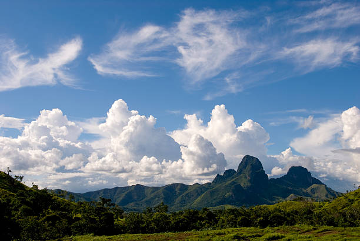

Descubre y Explora San Juan de los Morros
Somos una asociación especializada en turismo ubicada en San Juan de los Morros. Con nuestro equipo buscamos los mejores lugares turísticos, te llevamos a descubrir su ubicación y actividades turísticas de esta hermosa ciudad de Guárico. ¡Es hora de explorar junto a Alula!